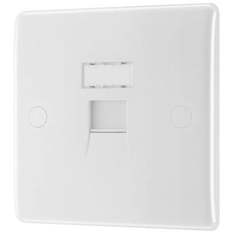
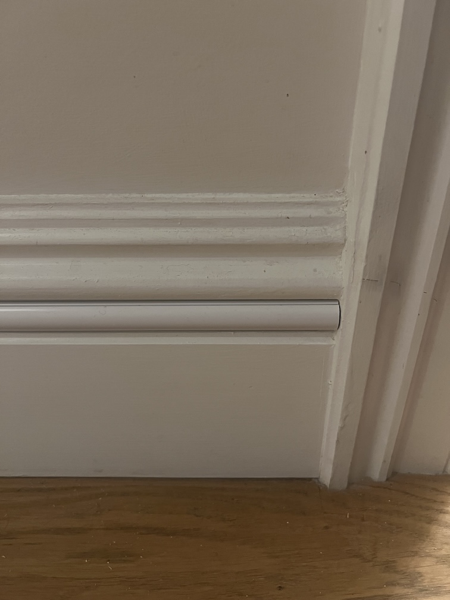
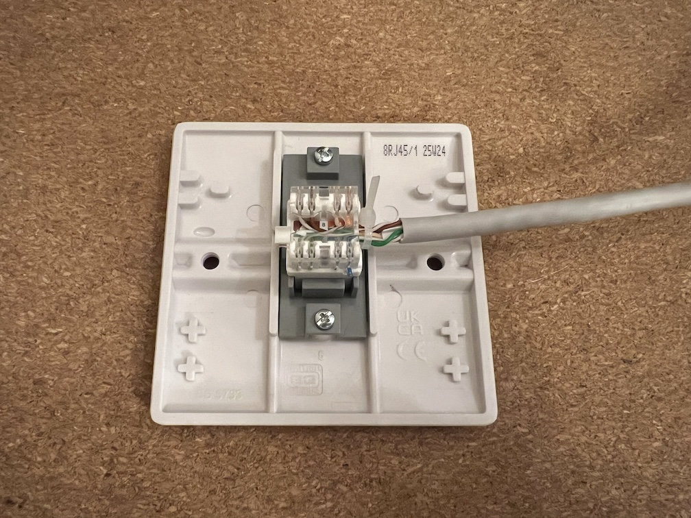
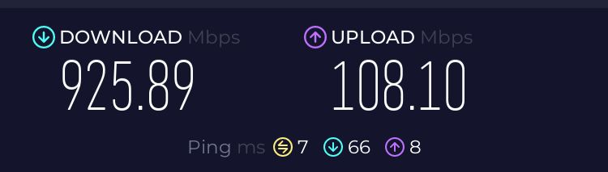

Finishing my network upgrade: running CAT6 ethernet
2025-11-19Background
This post continues with my home network and hosting setup mentioned in a few different posts.
When I finished up last time I'd upgraded my home internet to gigabit FTTP, discovered my Powerline adapters were limited to around 170Mbps with the wiring in my house, and bought a new TP Link Deco BE25 3-pack to try to improve the network speeds around the house.
I also bought a new 2.5Gb network switch, and a pair of 2.5Gb network cards; one for my server, and one for my desktop.
While I was able to take advantage of the >1Gb speeds between my PC and server, I was still (slightly) limited by the mesh network operating wirelessly, and was limited to 500-700Mbps on my PC from the speed tests I ran. While significantly better than the 170Mbps I was previously capped at, it still wasn't quite what we were paying for.
Wireless
Plan 1
A plan developed over the next couple of months to run an ethernet cable from the primary router near the kitchen to the dining room node next to my desk. My server and desktop were attached to the dining room node by ethernet already via the 2.5Gb network switch, so running one cable across the house would provide the upgrade I was looking for.
My initial plan involved pulling off skirting boards and using my palm router to carve channels for cables in the back of them. Unfortunately the odds of me pulling off and reinstalling all the skirting boards without damaging them was pretty slim, so that idea was scrapped.
Plan 2
The next idea was to attach cable clips to my skirting boards at regular intervals to help manage the cables a bit better, running them along some of the decorative channels. This seemed a decent enough idea, so I started buying parts.
I bought a 100m reel of CAT6 ethernet cable from CPC Farnell for £56.03 including shipping, though it's more of a light-grey than a white.
I bought two 25mm surface-mount backboxes (£0.59 each), two CAT6 RJ45 sockets (£6.89 each), and a box of cable clips (£1.79 for 100) from Screwfix, and started to plan a route.

I had to go round two french doors, navigate along skirting boards under a radiator, round several corners, and work out how to go through two doorways without ruining the house (as much as possible).
Plan 2.5
The skirting boards have a ~22mm gap in the decorative bumps near the top, and at some point I stumbled upon D-Line trunking. They have 20mm semicircular cable trunking that (as it turns out) fits perfectly in the aforementioned gap.
Some rooms have white skirting boards, and some magnolia, so I bought a mix of both colours of D-Line's Micro Trunking which set me back a bit. £19 for 8m of the white trunking, and £50.75 for 14m of magnolia trunking from B&Q.
The revised plan involved running the cable from one socket along skirting boards, along the floor under one french door, through two doorframes, over the other french door, and terminating at a socket under my desk (close to the network switch). At each point I'd be using the appropriate colour trunking and trying to keep it as tidy as possible.
To go through the internal walls, I decided that drilling a larger-than-required hole and lining it with plastic pipe would reduce the change I damage the wall or the cable when dragging the cable through. As most conduit seems to be >=20mm in diameter, I ended up buying a 15mm PVC pipe for £4.02 from Screwfix.
Installing
Cutting the lengths of trunking to size was very easy with a cheap mitre block and saw, and sticking them to the wall was simple using the built-in adhesive.
Drilling the holes in the walls near the dooframes ended up being a bit of a pain, but there are now two 16mm holes from one skirting board to the other with a 15mm pipe lining the hole. They're mostly hidden behind the trunking, so not much of an eyesore thankfully.

Terminating the cables was the part of the process I was most nervous about, as there was a limited number of times I could mess it up in the kitchen before I'd have to adjust the whole cable run.
I gave myself ~1.5m of spare cable at my desk that I can hide behind a large wooden unit. This allowed me to try and fail to terminate the cable in the socket a couple of times without ruining the whole project.
It took me longer than I'd like to admit to realise I'd need an additional tool to wire up the ethernet to the socket, so for anyone planning on running your own cables, buy a punch down tool (this one set me back £6.99).

Speed test
I have tons of short ethernet cables, so I connected the kitchen socket to my router, and the socket near my desk to my network switch.
With the sockets wired up, but everything still hanging loose I checked in the TP Link Deco app, and could see that my dining room wireless node was showing as having a wired connection to the main router.
I ran a speed test on my desktop, and was seeing ~900Mbps down, and ~100Mbps up. Good so far!
I screwed the socket next to the primary router into the back box, and was happy to see that the speeds were the same; I hadn't wrecked anything when screwing the faceplate into the back box.
When I screwed in the socket near my desk however, the speed dropped to a solid 100Mbps down, and the LED on my network switch was showing the cable was operating in 100Mb mode. It had been a squeeze getting the faceplate attached to the backbox, and I must have bent the cable too sharply, or ruined the punched-down connections.
Fixing my mistake
I snipped off around 20cm of the ethernet cable, but broke the backbox trying to widen the hole for the cable with my drill, so back to Screwfix I went to pick up another backbox and RJ45 socket. I opted for a different backbox (£0.99) this time, hoping it'd be easier to fit my cable in.
Attempt 2 went much better, and I'm happy that I have the full broadband speeds we're paying for at my desk.

I may try to run some of the spare ~80m of cable I have into the living room as I could use one of my spare 1Gb switches to provide a faster wired connection to our TV and consoles. That'll have to wait though, as I don't think my wife would be happy if I started drilling more holes in walls.